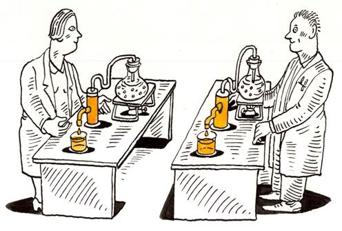

Reproducible data science

Source: https://blog.f1000.com/2014/04/04/reproducibility-tweetchat-recap/Ever since we started working on data science projects at Wellcome data labs we have been thinking a lot about reproducibility. As a team of data scientists, we wanted to ensure that the results of our work can be recreated by any member of the team. Among other things this allows us to easily collaborate on projects and offer support to each other. It also reduces the time it takes us to transition from an experimental idea to production.
How do we do that?
Our process has evolved over the years but the core ideas are heavily inspired by data science cookiecutter. Even though we do not initialise our projects with the template, we re-create the structure as needed in each project. The structure we follow is
PROJECT_NAME
| — data/
| |— raw/
| |— processed/
| — models/
| - [notebooks/] # jupyter notebooks
| - [docs/] # documentation can go here including results
| - [configs/]
| — PROJECT_NAME/ # source code goes here like train.py
| — requirements.txt
| - Makefile
| - README.md
| - [setup.py]
In square brackets are the files and folders most projects have but we do not enforce.
Data
We store our raw data in a dedicated folder and ensure that we keep this data unchanged, and therefore do not invalidate any processing we do after. Whenever we apply any processing to a raw or processed file, the result goes to either the processed (never raw) or models folder depending on the output. Even though we do not apply any versioning to the data or models, something that I will touch again later on the post, this convention allows us to recreate processed files and models by running our code through the raw data.
Our data and models are synced to AWS S3 (note that s3 provides some form of versoning). Our code is versioned through git and shared through Github. This setup means that any member of the team can switch and work on any project easily by cloning a repo or navigating to the project folder and pulling the data and models from S3.
Makefile
We make the process of syncing data and models even easier through the use of a Makefile.
PROJECT_NAME := classifier
PROJECT_BUCKET := datascience/$(PROJECT_NAME)
.PHONY: sync_data
sync_data: ## syncs data to s3
aws s3 sync data/ s3://$(PROJECT_BUCKET)/data
aws s3 s3://$(PROJECT_BUCKET)/data data/
.PHONY: sync_models
sync_models: ## syncs models to s3
aws s3 sync models/ s3://$(PROJECT_BUCKET)/models
aws s3 s3://$(PROJECT_BUCKET)/models models/
The Makefile allows us to define shorthand commands for commonly performed actions, and ensures that there is a consistent way to run these commands, which means they can be reproduced with the same result.
Virtualenv
One of the most important components of a data science project which we want to be able to recreate, is the virtualenv that contains all the dependencies of the project (for example the python library ‘pandas’). The dependencies are typically defined in a requirements.txt. To avoid different ways of creating the virtualenv (e.g. python -m venv venv, virtualenv -p python3 venv) and different python and pip versions we use another make command to standardise the creation of the virtualenv.
PYTHON := python3.8
VENV := venv
PIP := venv/bin/pip
.PHONY: venv
venv: ## creates virtualenv
@if [ -d $(VENV) ]; then rm -rf $(VENV); fi
@mkdir -p $(VENV)
$(PYTHON) -m venv $(VENV)
$(PIP) install --upgrade pip
$(PIP) install -r requirements.txt
Being able to get a reproducible virtualenv still requires that the dependencies you define are pinned to exact versions. Otherwise, every time a user creates a virtualenv with the above command they will get a different set of dependencies. A common way to ensure all required dependencies are pinned is through the use of an unpinned_requirements.txt and pip freeze.
The unpinned requirements file consists of the names of unpinned libraries (e.g. pandas) for which you don’t have a preference over which version is installed, and pinned libraries, for which it is important that a specific version or version range is installed (e.g. spacy>2 or spacy==3.0). You can install the unpinned requirements to your virtualenv and then create the requirements.txt with pip freeze which will output all dependencies pinned to the versions installed. You can automate updating the requirements.txt file with yet another make command
update-requirements: VENV := /tmp/update-requirements-venv
update-requirements: ## updates requirements
@if [ -d $(VENV) ]; then rm -rf $(VENV); fi
@mkdir -p $(VENV)
$(PYTHON) -m venv $(VENV)
$(PIP) install --upgrade pip
$(PIP) install -r unpinned_requirements.txt
echo "Created by update-requirements. Do not edit." > requirements.txt
$(PIP) freeze | grep -v pkg-resources==0.0.0 >> requirements.txt
Configs
Having uncorrupted raw data and a reproducible virtualenv is only a minimum requirement to be able to reproduce a data science project. We also need a way to replicate the actual analysis or modelling. Fortunately data science projects often follow a standard flow of steps where data is preprocessed, features are extracted, and a model is trained and evaluated. Each of these steps can be defined in a separate file, for example preprocess.py or train.py, and receive command line arguments for the various parameters that are needed to reproduce its outputs. It is important to avoid hardcoding any parameters, even those that seem less likely to change, as when they change you will make your previous results not reproducible. An example train.py would look like:
import argparse
def train(data_path, model_path, learning_rate, batch_size):
...
if __name__ == "__main__":
argparser = argparse.ArgumentParser()
argparser.add_argument("--data_path", type=str, help="path to train data")
argparser.add_argument("--model_path", type=str, help="path to save the model")
argparser.add_argument("--learning_rate", type=float, help="learning rate param")
argparser.add_argument("--batch_size", type=int, help="batch size param")
args = argparser.parse_args()
data_path = args.data_path
model_path = args.model_path
learning_rate = args.learning_rate
batch_size = args.batch_size
train(data_path, model_path, learning_rate, batch_size)
Now you can mention the exact command that recreates a certain result in your README and the user can rerun the step easily. You can take this a step further by defining a config file where you define the parameters for all steps of a particular experiment along with a version, something like
[DEFAULT]
version = 2021.03.0
[preprocess]
raw_data_path = data/raw/data.xlsx
processed_data_path = data/processed/data.jsonl
[train]
data_path = data/processed/data.jsonl
model_path = models/cnn-2021.03.0/
learning_rate = 1e-3
batch_size = 32
and your train.py, changed to read the arguments from the config, would now look like:
import configparser
import argparse
def train(data_path, model_path, learning_rate, batch_size):
...
if __name__ == "__main__":
argparser = argparse.ArgumentParser()
argparser.add_argument("--config", type=str, help="path to config file")
args = argparser.parse_args()
cfg = configReader
cfg.read(args.config)
data_path = cfg["train"]["data_path"]
model_path = cfg["train"]["model_path"]
learning_rate cfg["train"].getfloat("learning_rate")
batch_size = cfg["train"].getint("batch_size")
train(data_path, model_path, learning_rate, batch_size)
In the example shown I am using an INI config file but you can use other formats like TOML, YAML and JSON easily. Config files offer a couple of advantages. The most important for reproducibility is that they contain all the parameters needed for each step in order to recreate the entire experiment. At the same time, they offer a quick way to review all the different parameters tried on a given project. If combined with a results table in a separate document where the version of the config links to the results achieved, someone can get some really good intuition about what has and has not worked. Note that we also use the version number in the model output to be able to know which config produces each model.
Is that all?
The ideas presented so far have taken us a long way to reproducibility but they are not the whole story. I will briefly mention some additional considerations that are also important and that have been progressively playing an important role in our projects.
Tests
Possibly the most important next thing is tests. In the absence of tests, to ensure that your code and configs work as expected after every change would require manually rerunning some that are most likely to be affected. Rerunning your configs through your code is a form of integration test so why not automate it? It is also the bare minimum to ensure reproducibility. Ideally though, you want to have unit tests for most steps so that if a change has the potential to affect your results, you are more likely to catch it early.
Code reviews
Another mechanism for catching errors that might impact reproducibility is code reviews. To enable code reviews we work mainly in python scripts instead of notebooks. Code reviews allow us to capture methodological flaws. To reduce the time commitment that code reviews require we aim for pushing small changes, ideally less than 200 lines, even though that is not always possible. Code reviews are also an excellent way to collaborate on projects as data scientists tend to work independently even in teams.
Random seeds
Data science algorithms are rarely deterministic. From splitting your data to initialising parameters of a neural network, it is typical for some parts of the pipeline to contain a probabilistic component. In order to get reproducible results then, it is important to somehow control that randomness, and the way to do that is by setting up a random seed. Python numpy, tensorflow and most data science libraries expose a standard way to define the random seed that will be used. Note that you may need to set the seed in multiple places in order for it to be truly reproducible.
Data and model versioning
Of course the elephant in the room so far has been something I mentioned very early in the post, which is that we do not version our data and models. Actually we sort of version our models as shown earlier by using the version from the config, but what about the data? Well, one idea is to version the data in a similar way to models i.e. introduce a calver number which does not need to follow the config so we do not have to keep identical copies of the data but can change when data has changed. That would be better from what we have now and in fact there is one project that follows that idea but there is still something missing.
What is missing is the fact that, as I mentioned, data science projects constitute a series of steps which can form a Directed Acyclic Graph (DAG). Any change in a file used by the DAG, either data or code, may invalidate the results in the end, and so far we have no way of defining that DAG and checking that no changes have been made. This is solved by DVC, a tool we have lately started using to address that obvious gap in our reproducibility efforts. DVC requires a separate blog post all together so stay tuned.
You can see all those ideas in actions, in various stages at the following open source projects (1,2). We would love to hear your thoughts and suggestions on this very important and interesting topic.